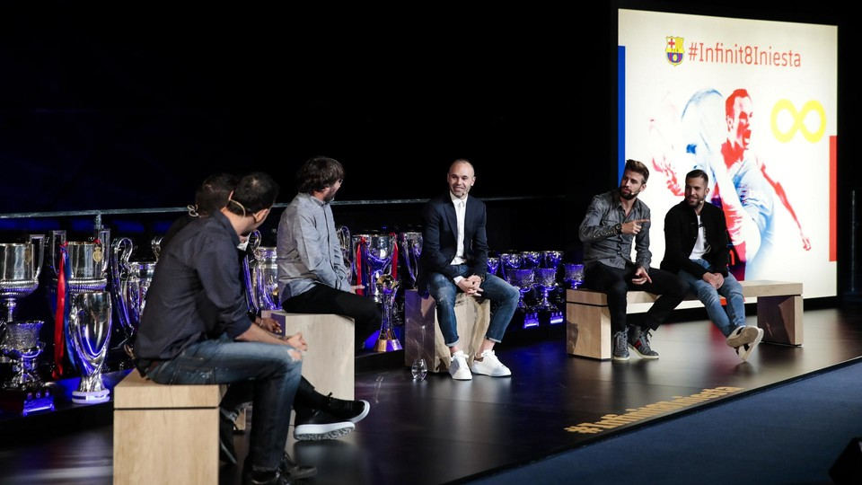
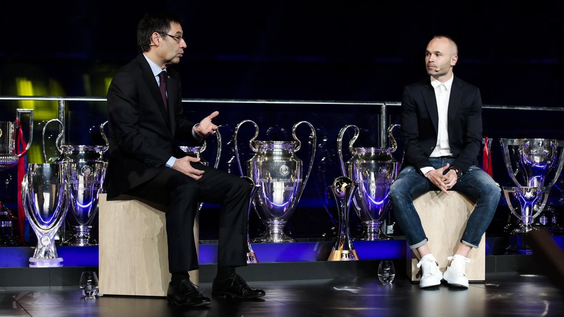
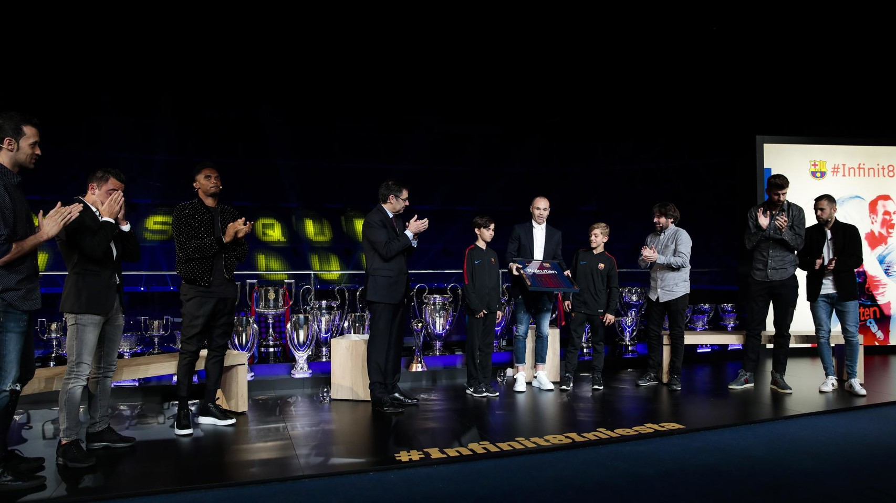

NEWS
A NIGHT TO REMEMBER FOR INIESTA
18.05.2018
Andrés Iniesta’s goodbye at FC Barcelona on Friday reached its penultimate act. The young lad from Fuentealbilla who arrived at the Club 22 years ago and will leave at the end of the season was given an emotional official Club farewell in the presence of a whole host of guests.
Camp Nou put on its best face for the event that was hosted by the Catalan comedian and presenter Jordi Évole. Members of the first team squad, coaching staff, former team mates, members of the Board of Directors as well as figures from the world of sport such as Marc and Pau Gasol to name but a few.
Also present were Iniesta’s family who were the recipients of the most emotional part of his closing speech. His parents, his wife and other relatives were all present, their role in the midfielder’s success all too obvious.
From boy to man at La Masia
His start at Barça was not as easy as many may think. Iniesta himself admitted: “I think on the trip up from Albacete to Barcelona, between my parents, myself and my grandfather, we said barely four words.” Despite early difficulties settling in, the youngster gradually became a man and at the same time, a world class footballer thanks to the combination of his modesty, hard work, extraordinary talent and the nurturing atmosphere of La Masia.

The event at Camp Nou also allowed those present to look back at his debut against Bruges back in October 2002, his famous goal at Stamford Bridge against Chelsea and his World Cup winning goal in 2010, undoubtedly three of the most special moments for Andrés. “At Stamford Bridge the Virgin appeared to us and the Virgin was called Andrés,” joked Xavi Hernández.
The likes of Samuel Eto’o, Sergio Busquets, Jordi Alba and Gerard Piqué all joined Iniesta on stage and they reminisced over other great moments such as the Champions League wins in 2006 and 2011.
There were plenty of laughs during the evening as his team mates revealed just how bad Iniesta is at Mario Kart, his musical tastes in the dressing room and the secrets of the squad’s Whatsapp group with Gerard Piqué as administrator.

On an institutional level, Josep Maria Bartomeu summed up Iniesta’s career at Barça. “His idea of football is the essence of Barça. He has the values that Barça transmits and that is his legacy. Come back soon!” revealed the Barça president.
Between Saturday and Sunday, Iniesta will reach the final act of his Barça farewell. On Saturday he will have his final training session with his team mates and on Sunday he will make his final appearance at which Camp Nou will pay a tribute worthy of a legend such as Andrés Iniesta.
